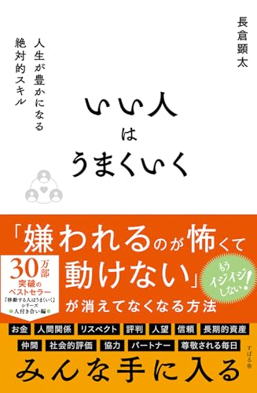
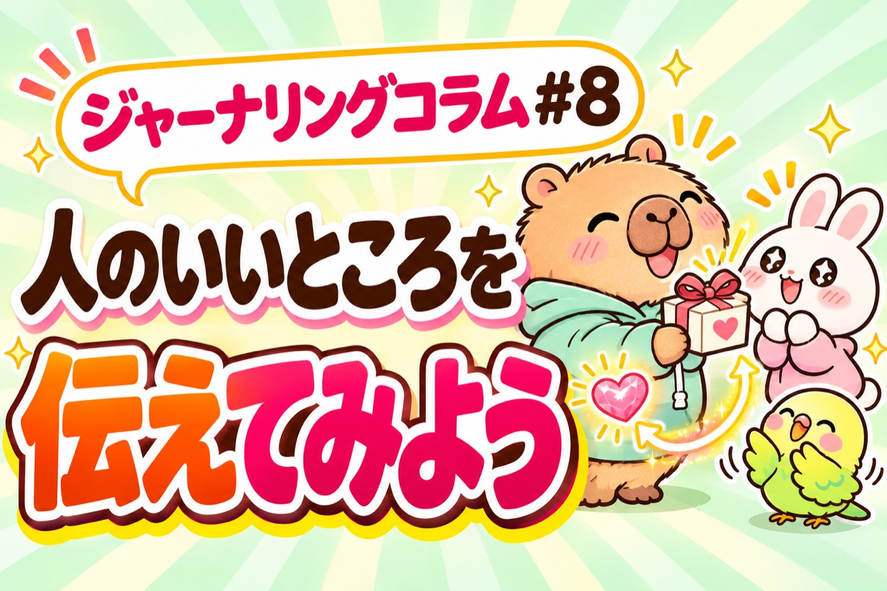
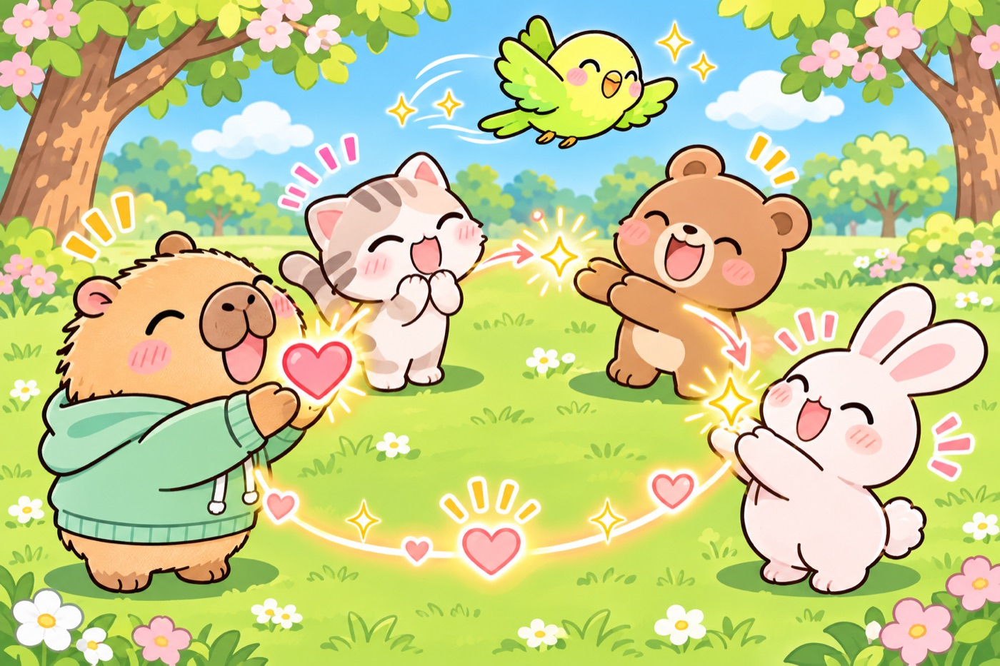
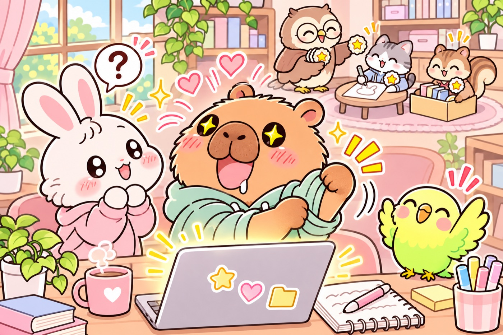
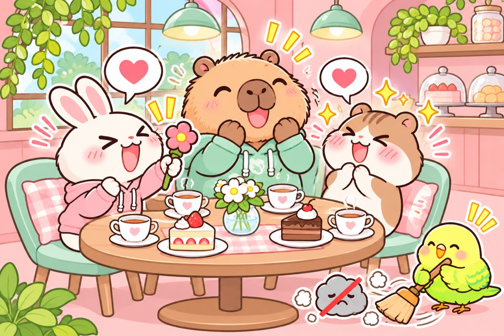
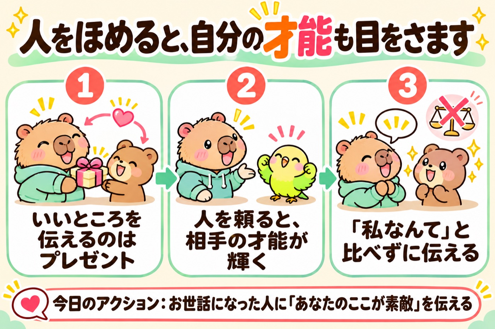

いい人はうまくいく
いい人は
うまくいく
人生が豊かになる絶対的スキル
長倉顕太すばる舎
今日の「具体的なエピソードを添えて」と、まったく同じことが書いてあって、思わず声が出ました🦫

雨の関西から、オフ会に出かける前に録った今朝のおけもんです🦫 今日から声を少しクリアに整えています。見ても聴いても、どっちでもどうぞ😊
♪ BGM：Morning／しゃろう
そんな方、いませんか？
はい、私もいつもいつも自分のいいところを認めてあげられているわけじゃないんです🤣
みなさん、おはようございます！
11月28日、土曜日。おけもんです🦫
ジャーナリングコラム、気づけば8日目。無事に1週間を超えましたー😆🙌
習慣ってよく「21日」なんて言いますけど、やり始めると、少しずつ「できる癖」がついてくるなぁと感じています。
……とはいえ、実は今、朝8時。始める時間がちょっとずつ遅くなってきていて、
と少し心配なところもあるんですが。今日もマイクの前に立って喋れた自分を、まずは褒めてあげたいと思います🙌
今日のテーマは、昨日の「私が、自分の才能に気づいた日」で予告していたこちら。
「人のいいところを褒めると、自分の強みに気づけるんじゃない？」です😊
これまでのコラムでは、「自分の当たり前」「ついやっていること」には自分では気づかない、だから周りから褒めてもらったことに気づこう、感情が動いたことをメモしよう、とお伝えしてきました。
でも、そうは言うても、なかなか難しいと思うんです。
そういう時に効果的なのが、自分はできなくても、人のいいところ、「この人すごいな」と思うところを積極的に褒めること。
よく「先出しの法則」なんて言いますよね。強みの自己理解も、そこに当たるのかなと思っています。
相手の方も、自分のそういう良さには気づいていないことが多いんです。だから伝えてあげると、その人が自分の強みに気づいて、人生がすごく良くなっていくサポートになる。
それって、その人にプレゼントを贈ることなんですよね🎁
そして、そういう行動をしていると、巡り巡って、周りの人から自分のいいところを褒めてもらえる機会も増えていきます。循環が回っていくんです😊

そう思ったところは、どんどん相手に伝えてみてください😊
話していて思い出したんですが、自己理解ができていて、自分の強みに気づいていて、人生を楽しく生きている人って、もれなく褒め上手なんですよね😳
人のいいところによく気づくし、「やってもらって嬉しいな」と感謝を伝える力が高い。だからこそ巡り巡って、自分の人生が豊かになったり、自分の強みに気づいたりすることにつながっているんだろうなと思います。
もうひとつおすすめなのが、人を頼ること。
……私はまだまだ「頼り下手やな〜」と思うんですけどね🤣
でも人って本来、好きな人から頼られたり、誰かの役に立ったりするのが、すごく嬉しいんですよね。
ちょっと想像してみてください。自分がついやりたくなること、いつまでたっても自然とできること。
私で言えば、今の強み発見もそうですし、AIのこともそう。好きな人たちから「これちょっとやってくれへん？」「このAIの使い方教えてくれへん？」なんて言われたら、
ってなっちゃいます🤣
そういう「相手がついやりたくなること」を見つけて、積極的に頼ってみるのも、すごくいいと思うんです。

私と一緒にAI初心者サポートチャットの管理人をしているみんのさんは、本当に人を頼る天才なんです。
人に役割を渡して、その人がうまく力を発揮できるところを見出す力がすごく高い。「包含」や「成長促進」の資質が高い方なので、「この人はこういうことをしたらいいんじゃないかな」を見る力が高くて、自然にそうしたくなるのかもしれません。
ストレングスファインダーには、自分の自然とできることで人に貢献して、自分のできないところは人のいいところに頼る、という考え方もあります。
だから、「自分の強みに気づかへん」「どうしていいかわからへん」という方こそ、まずは人のいいところを見つけて褒めたり、人を頼ったりするところから始めてみてください😊
ただ、ここで1点だけ気をつけたいことがあります。
それは、「自分ができないから」「自分はダメだから」という前提だけで、人を褒めないこと。
謙遜のつもりで、
と言ってしまうこと、ありますよね。
でもそれを続けていると、比較の中で「私は劣っているけど、周りの人はすごい」と考えながら生きていくことになって、「私なんて」の沼に入っちゃう危険があるんです😢
私とあなたの比較ではなく、「この人はここが素敵だな」。それをちょっとだけ意識してもらえたら嬉しいです😊
実は私のミッションは、「私なんて」をこの日本からなくすことなんです。
自分が口にする言葉って、自分自身がいちばん聞いていますからね。少しずつ減らしていけたらいいなと思っています。
もし、つい言ってしまっても大丈夫。
って気づいてあげるだけでも、すごく大事な一歩です🌱
実は、人のいいところを見つけて伝えることが、そのまま強みを伸ばすきっかけになる資質も、けっこうあるんです。
私も最上志向とポジティブを持っているので、オフ会では「ここ、すごくいいところだから生かしたらいいんじゃないですか？」とつい言ったりします😊
それこそ私のオフ会では、最後に「褒め褒めタイム」を作っているんです。
と言いながら、関わった人たちをみんなで褒める時間。

資質を全部理解するのはなかなか難しいので、今日はシンプルに、周りのいいところをどんどん見つけて伝えてみよう、でOKです🙌 言われたら嬉しい、プレゼントですからね🎁
褒める時・感謝を伝える時のポイントをひとつ。
ご縁があった時の「ありがとうございました」や、セミナー・イベントの感想を伝える時。ただ「ありがとうございました」だけじゃなく、
と、具体的なエピソードをひとこと加えてみてください😊
その場の臨場感がグッと高まるし、自分のアウトプットにもなるし、周りの人にも喜んでもらえる。いいことばっかりなんです✨
昨日は「周りから言われることを書き留める」でしたが、今日はちょうど逆向き。身近な人でも、オフ会で会った人でも、お世話になった人でも大丈夫です。
ちょっと照れくさいかもしれません。でも、リベはそういうのが自然に回っている文化ですよね。この文化の中なら、普段なかなかできないことも、ちょっとやってみやすいんじゃないかなと思います😊


今日の「具体的なエピソードを添えて」と、まったく同じことが書いてあって、思わず声が出ました🦫
長倉さんは、多くの人の感謝は「解像度が低すぎる」と書いています。「昨日はありがとうございました」「いろいろお世話になりました」だけだと、何に感謝しているのかが伝わらない、と。
だから、「ありがとう」の後に、必ず「理由」を添える。コツは、固有名詞・数字・感情を入れること。
具体的に言われると、人は「自分のこだわりや努力が報われた」と感じるそうです😊
そして、本人がいない所で褒める「陰褒め」も、巡り巡って相手の耳に届く贈り物になる、とも。
……今日の「プレゼントは巡り巡って返ってくる」と、同じ話ですよね🎁
参考にした資料：長倉顕太『いい人はうまくいく』（すばる舎）「解像度の高い『ありがとう』を伝えるコツ」「陰褒め」の節
今日のお話の続きを、自分のペースで歩いていけるように、道しるべを置いておきます😊 気になった1本からどうぞ。
ご自身のペースで大丈夫です。毎日絶対にやらないといけない、なんてことはありません🙌
みんなの投稿を見て「あ、そういうことなんや」と気づきを増やすのも、ノートに1行だけ書いてみるのも素敵です😊
今日の関西は雨☔
私はこのあとオフ会に行って、夕方は夜勤のアルバイトに行ってきます！
みなさんも、素敵な週末になりますように🌈
いいところだけじゃなく、弱いところも積極的に出してみる「バルネラビリティ」のお話。ブレネー・ブラウンの話もしようと思います😊 質問やリクエストも大歓迎です！